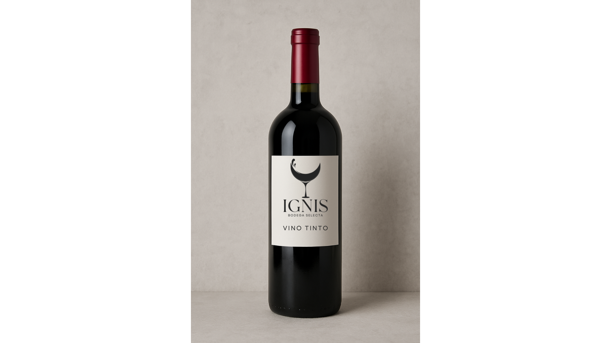

Premios y Reconocimientos
Descubre los galardones y reconocimientos internacionales que avalan la calidad de nuestros vinos.
Gran Medalla de Oro
Concurso Mundial de Bruselas 2024
Nuestro Reserva Malbec 2018 ha sido galardonado con la Gran Medalla de Oro en el prestigioso Concurso Mundial de Bruselas, uno de los certámenes más importantes del mundo vinícola.
Este reconocimiento sitúa a IGNIS entre las bodegas más destacadas a nivel internacional, avalando nuestro compromiso con la excelencia y la calidad.
Ver el vino premiado

🏅Nuestros Reconocimientos
2024
Gran Medalla de Oro - Concurso Mundial de Bruselas
Reserva Malbec 2018
Medalla de Plata - International Wine Challenge
Blanco Barrica 2021
Medalla de Bronce - Decanter World Wine Awards
Espumoso Brut Nature 2019
2023
Medalla de Oro - Mundus Vini
Tinto Gran Reserva 2017
Medalla de Plata - Concours Mondial de Bruxelles
Rosado de Lacrima 2022
90 puntos - Robert Parker Wine Advocate
Dulce Moscatel 2021
2022
Medalla de Oro - International Wine & Spirit Competition
Tinto Reserva 2016
92 puntos - Wine Enthusiast
Blanco Barrica 2020
Reconocimientos Especiales
Bodega del Año 2023
Otorgado por la Asociación Internacional de Enólogos
Certificación Ecológica
Por nuestras prácticas sostenibles en viticultura
Premio a la Innovación
Por nuestras técnicas de vinificación de precisión